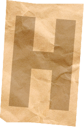
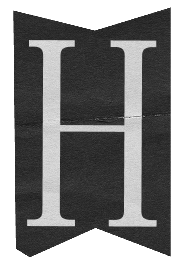
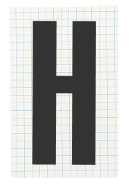
To be human is to be
a part of something
bigger
0%
UMAN-I-TEES
HUMANS DON'T CHANGE
THE WORLD
 ALONE
ALONE
VOLUME 01
THE BEGINNING OF SOMETHING BIGGER
In a world of noise, the most powerful voice is one that stands for others.

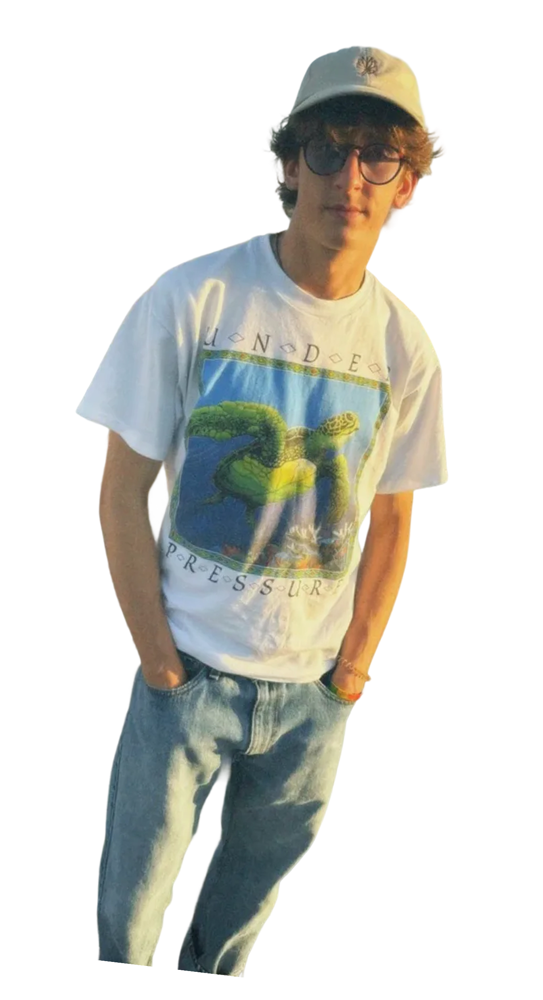
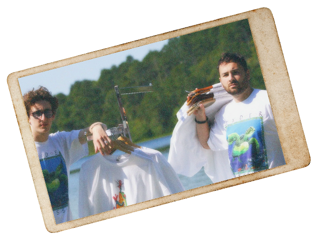


 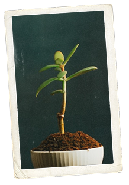
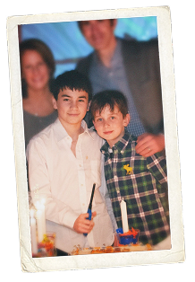
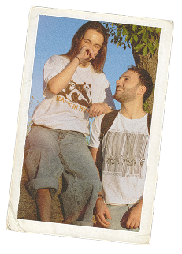
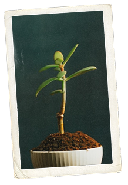
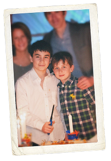
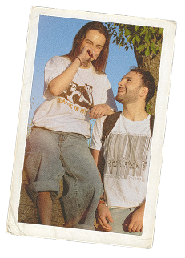